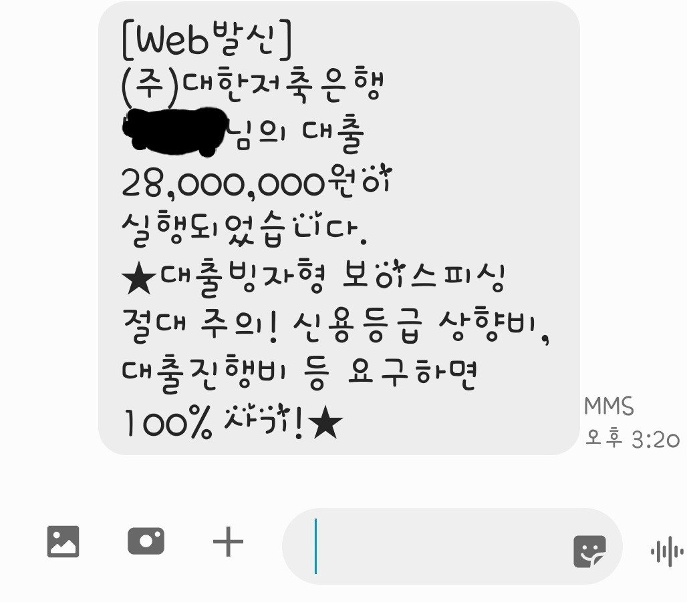

[직장인대출] 직장인대출 조영우이사님 감사합니다
이번 1월에 회생60회차 납부하고 면책받으면서
신용등급이 많이 오를거라생각했는데 코로나터지면서
3개월정도 연체가 1년전에 있어서 인지 등급이 낮은
상태였습니다 4대보험되는 직장다니고 연봉은
4500~5000정도되는데 회생등이유로 정규직전환이
올해1월에되어 4대보험 3번 납부된거 확인하고
회생때받은 대부3건 2600을 중금리로 대환요청드렸습니다
접수하고 과거연체이력등의 이유로 부결되었습니다
포기하고있었는데 조영우이사님께서 강력하게 금융사에
재심사요청을해주셨고 3일간에 고생끝에 대부3건
대환에 250여유자금까지 받을수있었습니다
마무리하고 이제 올라갈일만남았으니 대부쪽은
쳐다도보지말라고 해주시면 다독여주시는 말까지
너무감사했습니다 앞으로 신용관리잘해서 은행권진입
하는데까지도움도 주신다고하여 마음이 든든합니다
항상 내일처럼 생각하시면서 도와주셔서 감사합니다
